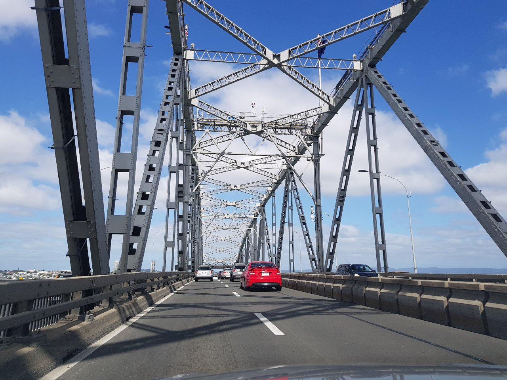
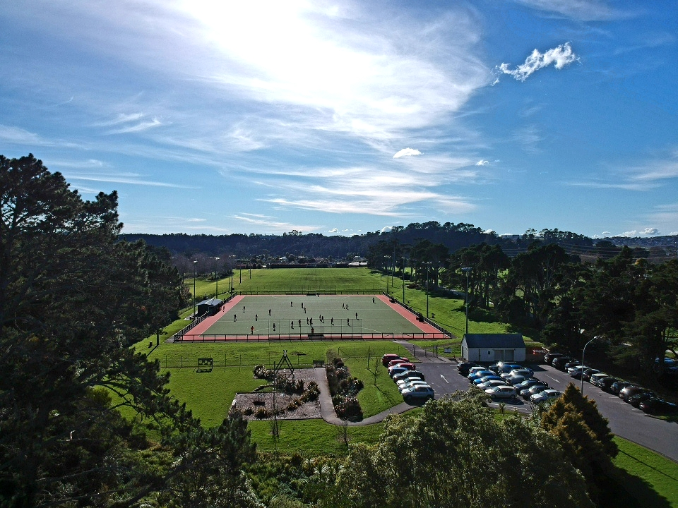
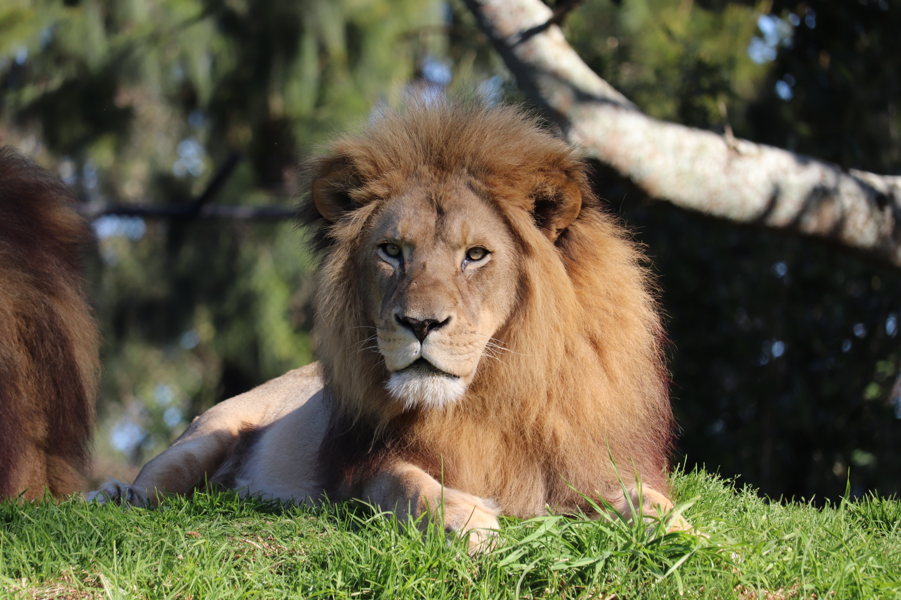
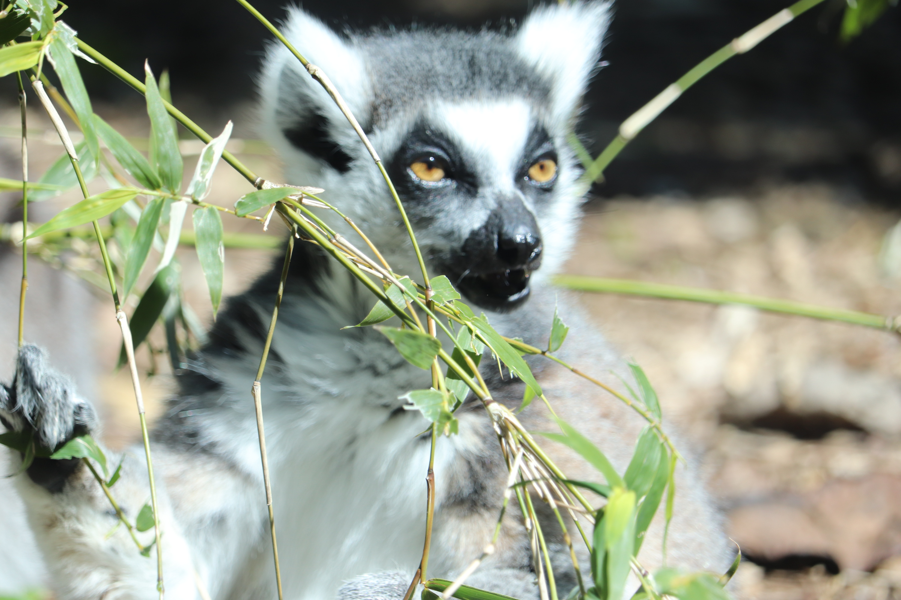

| Architecture |
 |
- Manual exposure mode
- ISO: 100
- Aperture: f/8 to f/14
- Shutter Speed: Varies depending on the light, but you could start with 1/125th of a second and go from there.
|
Smartphone |
| Nature |
 |
- AV priority exposure mode
- ISO: Lowest Number Possible
- Aperture: f/7 to f/11
- Focal Length: Choose a lens that goes around 35 to 100mm
|
Dslr |
| Aerial |
 |
- AV Priority exposure mode
- ISO: 100
- Aperture: f/2 to f/5.6
- Shutter Speed: Start from 1/500 and adjust from there
|
Dslr |
| Portrait |
 |
- Manual exposure mode/auto focus
- ISO: 100-400
- Aperture: f/2-f/4 or f/5.6-f/8
- Shutter Speed: Depends on whether you are taking photo of a single person or a whole group
|
Compact Camera |
| Astro/Night |
|
- Manual exposure mode
- ISO: 400-1600
- Aperture: f/2.8 to f/4
- Shutter Speed: Exposure length of 15-30 seconds
|
Dslr |
| Wildlife |
 |
- AV/TV priority exposure mode
- ISO: Lowest Possible
- Aperture: f/5.6 to f/8
- Shutter Speed: For still animals, from 1/50 to 1/320 and for walking animals from 1/400 to 1/800
|
Dslr |
| Landscape |
 |
- Manual/AV exposure mode
- ISO: 200-400
- Aperture: Widest possible (f/2.8) or moderate
- Shutter Speed: Start from 1/500 and move ahead if needed
|
Compact Camera |
| Macro |
 |
- Manual/AV exposure mode
- ISO: 100-800 (without flash)
- Aperture: f/5 to f/7.1
- Shutter Speed: Start from 1/250 and go upto 1/400
|
Dslr |